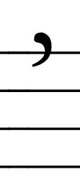

This is basically a condensed version of the Rules for Interpretation section of the Gregorian Institute's 1954 Liber Brevior, written for a singer who is aware of the general practice of singing, but not so much with modern notation or sight-reading.
While Gregorian chant may, at first, appear to be completely different from modern/standard notation, they are actually quite similar. The staff is the same in most respects (albeit with just three spaces and four lines, rather than the four and five of modern notation). The only major difference is the way in which many notes which occur together are notated.
Each musical "idea" in Gregorian chant is represented as a neume, which can be thought of in the same way as a slur that encloses a related group of notes in modern notation. To that end, different chants may be described as "Syllabic," (when each syllable has just one or two notes per syllable), "Neumatic" (when most syllables have a more complex neume of around five notes), and "Melismatic," when at least a few syllables are sung as very long, complex sets of notes, often twenty or more.
Unlike modern music, Gregorian chant does not have an absolute scale. Rather, the clef at the beginning of a piece of music signifies what note should be considered "do" on the solfege scale (i.e. "do-re-mi-fa-so-la-ti-do"). Since the starting note is irrelevant to the visual representation of the music, pitch is kept by the use of either the "do" clef or the "fa" clef, which signify where the agreed "do" and "fa" should be.
If possible, it is easiest to practice sight-reading with access to a keyboard. A pretty good online keyboard can be found here. I am working on setting up a quick-reference page with sound on this website to practice specific tricky intervals.
The ictus, or stressed note, is meant to be held slightly longer and sung slightly louder than the other notes in a neume. Many different markers may signify which note has the ictus, with different priorities. The vertical episema is the highest-priortiy marker of an ictus.
| Punctum, a single note | |
| Virga, a single note. This note is sung as having the ictus if there is not a different accented syllable in the word, or a different note with a vertical episema. | |
| Distropha, a neume of two notes that can be sung either as a single long note, as either a dotted punctum or a horizontal episema, or as a repercussive note, where the note is restressed. Repercussion is more common on tristropha, two distropha, or tristropha followed by a distropha (or vice versa). Regardless, repercussion is rare outside of melismatic chants (though it is found in some neumatic chants). | |
| Clivis, two notes descending. | |
| Podatus, two notes ascending. | |
|
Scandius, three notes ascending. |
| Climacus, any number of notes descending with the use of any number of "punctum inclinatum," diamond-shaped notes, for those after the initial note. Punctum inclinatum are meant to be sung slightly faster than a regular punctum. | |
| Torculus, a down-up-down pattern of three notes. | |
| Porrectus, an up-down-up pattern of three notes. | |
| Vertical episema or ictus, indicates the stressed note in a neume. This mark takes priority over any other marking that may indicate the location of the ictus. | |
| Horizontal episema, or usually just episema (when the vertical episema is referred to as an ictus), roughly doubles the length of the notes over or under which it appears. | |
| Liquescent, basically a grace note. The liquescent note should only be pronounced as a vowel colored by the following letter (vowel or consonant), even if the next letter is in a different syllable. | |
| Quilisma, a note which is pronounced with a slight waver increasing in pitch so that it transitions smoothly from the lower previous note to the higher following note. The ictus is on the preceding note. |
The names and types of compound neumes are not terribly relevant for understanding how to read and sing Gregorian chant, but a much more detailed explanation of the chant including these terms can be found in the Liber Brevior, and some historical context on the interpretation of neumes can be found at the wikipedia article on neumes.
| A | /ɑː/ as in the a in father and palm. |
| E | /eɪ/ as in the a in face and ray. |
| I | /iː/ as in the i in prestige and the ee in fleece. |
| O | /oʊ/ as in the oa in goat and boat. |
| U | /uː/ as in the oo in goose and the uin cruel. |
Most consonants are the same as in English, with a few exceptions:
| R | Unlike in modern English music, chant should not be pronounced in an essentially non-rhotic way. For example, in the line "Round yon virgin mother and child" from "Silent Night," the word "virgin" is pronounced so that the i is colored by the letter r, but the r itself is silent. This is not the case for chant. Rather, the r sound should be made with the tongue at the roof of the mouth, in about the same location as it would be held to make the l sound. Unfortunately, there are no English words which use this sound to compare. |
| CC | /tʃ/ as in the ch in catch and China. |
| CH | /x/ as in the ch in Loch. It is made in the back of the throat, unlike how most people would pronounce ck. There are very few words in English that use this sound. |
| TH | Pronounced as /tʰ/. Rather than /θ/ as in the th in thick and path, the h gives the t a slight aspiration. There are no English words which use this sound to compare. Essentially, the t should prounounced breathy. |
| CT | Ct is pronounced as a single consonant. |
| Z | When following a vowel, z makes a tz sound. |
One major benefit of singing in a choir is that breaths can be taken as needed. Still, learning and practicing good pacing is beneficial to keep from being the "weak link" in the choir at any given point. Therefore, care should be taken to breathe in enough that one only has to take breaths at the prescribed places.
| The quarter bar signifies a very short pause where a breath should not be taken. | |
|  | A comma indicates a pause of similar brevity to that of a quarter bar, but where a short breath may be taken. |
| A half bar is similar to the quarter rest in standard notation. Here, a breath may be taken. | |
| A full bar is along the lines of a half rest. Here, a breath really must be taken. | |
| A double bar's length depends on the length of the chant and its location within it. Typically, it indicates the switching of a choir or the end of a piece. Regardless, a breath certainly ought to be taken here. |